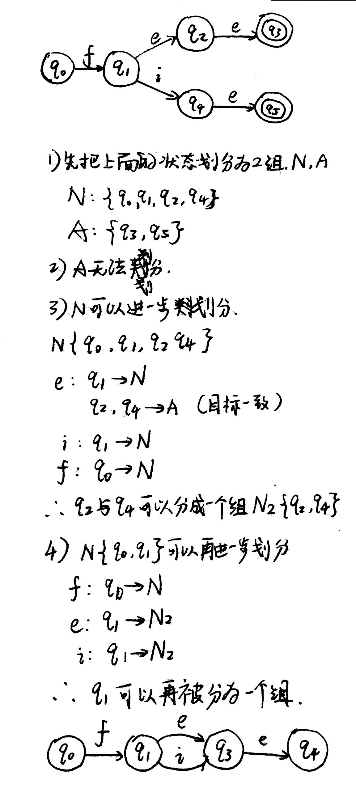

WFST详解#7
Minimization
本文是WFST系列文章的其中一篇，想要了解更多可以点击这个系列的目录，欢迎您的到来～
定义
Minimization的作用是最小化一个WFST。这个最小化的操作好处显而易见——使得转换的效率得到提高，缩小存储的空间。该操作简单直接的思想就是，把能够等价起来的状态都合并成一个状态。
算法 & 例子
Minimization的具体实现算法还是挺复杂的，但是从原理上理解却并没有那么复杂。本文就不再想前面的文章一样，对伪代码进行分析了。这里仅仅做一个简单的阐述，如果感兴趣的话可以自己找相关的资料去了解。
对一个WFST进行最小化操作分为两个步骤：
- 对WFST进行确定化操作（det），再进行Weight-Pushing操作。
- 使用经典的最小化算法对WFST进行最小化，常用的有Hopcroft算法。这里，我们把输入，输出和权重都看做一个标签。
第一个步骤很好理解。第二个步骤使用的方法是一个非常经典的最小化算法，下面简单讲解一下它的思想。在这之前，先看一小段伪代码：1
2
3
4
5
6
7
8
9
10split(S):
foreach(character c)
if(c can split S)
split S into T1, T2...
# 主函数
hopcroft():
split all nodes into N, A
while(set is still changes)
split(S)
以上的代码参考https://www.youtube.com/watch?v=i_0GRbb4OJw。如果看得到视频就看视频的讲解，如果看不到的话，在这里我会做一个总结介绍：
- 首先，先将所有的状态分成两组，一组是N，一组是A。其中A状态指的是终止状态，而N状态代表了其他的状态。
- 对两个组进行拆分，拆分按照一下的方法：如果组内有状态的前进方向是不一致的，按照起前进的状态的组别进行划分。意思就是说，如果一个组里面有三个状态，两个状态通向另一个组，一个状态通向自己本身的组，那么它们就要被分为两个新的组。其中，所有转移到另一个组的弧都需要被保存下来，作为最后的转移弧。
下面可以看看简单的推导：

如果想要更加深入地了解这一个算法，可以到网上查找相关的资料。